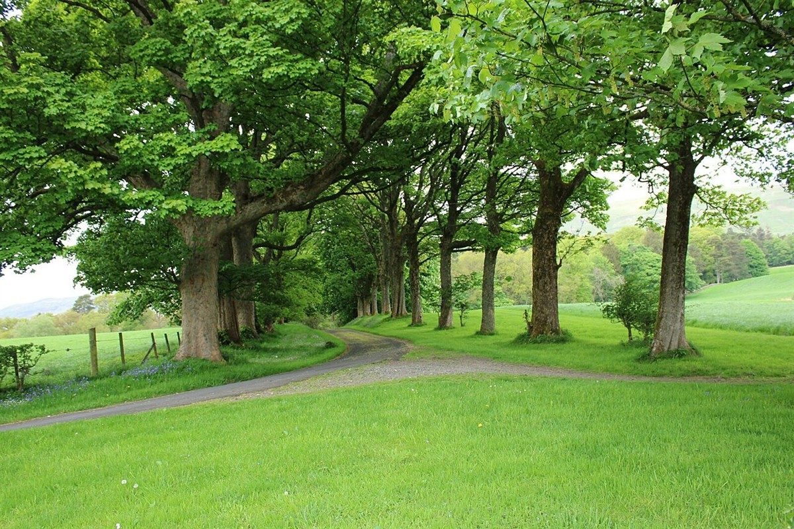

口コミ
口コミ(イメージ例)
下の3件は、制作側が「こんな感想が届いたら」と想像して書いた創作です。実在のお客様の投稿ではありません。
イメージ例窓の近くの席で、やりたいことを付箋にひとつ書いてから帰りました。静かに考えごとができる時間でした。
イメージ例カップを両手で持って、ゆっくり過ごしました。急がなくていいと思えるお店です。
イメージ例友人との待ち合わせまでの時間に立ち寄りました。また来たい、と書き足したくなりました。
※上の口コミは制作側の創作で、実在のお客様の投稿ではありません。お店の実際のサービスを示すものでもありません。
イメージ写真
窓辺と、緑の小道。

